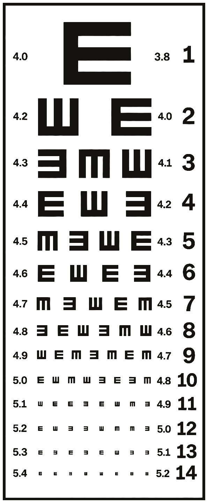

Optika dr Vesna Milosević
Naočare, očni pregledi i pažljivo odabrana optika.
Zakaži pregled →Kolekcije
Pažljivo odabrani okviri i stakla, predstavljeni onako kako ih nosite — kao deo svakodnevice.
01 — Kolekcija
Naočare za svakodnevni stil. Čiste linije i okviri koji prate lice, a ne diktiraju ga.
Pogledaj →Dostupni modeli
02 — Kolekcija
Sunčane naočare sa karakterom. Zaštita koja se nosi kao stav, u svakom svetlu.
Pogledaj →Sunčane naočare — modeli
03 — Pregled
Stručan očni pregled i individualna preporuka — temelj svakog dobrog para naočara. Uzimamo vremena da razumemo kako gledate i kako živite.
Od prvog reda do poslednjeg, sve počinje jasnim pogledom.

Usluge
Sve što je potrebno da vidite jasno — bez žurbe, sa pažnjom.
Detaljan i individualan pristup svakom pacijentu.
Pažljivo odabrani okviri za različite stilove i potrebe.
Zaštita i estetika u jednom.
Pomoć pri izboru okvira i odgovarajućih stakala.
„Naočare nisu samo pogled.
One su deo vašeg stila.“
O nama
Optiku dr Vesna Milosević vodi ideja da svaki pogled zaslužuje vreme i stručnost. Pažljivo biramo okvire i stakla, a svaku preporuku prilagođavamo čoveku pred nama.
Savremen pristup, mirna atmosfera i briga o vidu — od pregleda do izbora naočara.
— dr Vesna Milosević
Pronađite nas
Svratite u radnju — rado ćemo vam pomoći pri izboru i podešavanju naočara.
Pogledaj lokaciju →Česta pitanja
Preporučujemo zakazivanje kako biste bili sigurni da vam možemo posvetiti dovoljno vremena, ali rado ćemo vas primiti i bez najave kad god smo slobodni.
Detaljan pregled obično traje između 20 i 30 minuta, u zavisnosti od vaših potreba.
Pomažemo vam da pronađete okvir koji odgovara obliku lica, stilu i načinu života — bez pritiska, uz iskren savet.
Naravno. Rado ćemo podesiti i one naočare koje niste kupili kod nas.
Na osnovu pregleda i vaših navika preporučujemo stakla koja vam najviše odgovaraju — od klasičnih do onih sa dodatnim zaštitama.